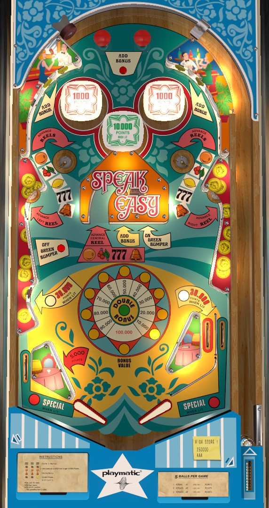

Not to be confused with Speakeasy / Speakeasy 4 (Bally, 1982) or Circa 1933 (Fascination, 1979).
Speakeasy is the 4-player version, and The 30's is the 1-player version, with identical rules and scoring.
Build base bonus by shooting the yellow standup targets in the top corners of the game or any saucer, then try to double the bonus by using the saucers to spin the slot machine reels on the backbox with the hope of earning three Bells, which doubles the bonus. With bonus doubled and maxed, shoot the saucers more to score additional points and free games, or light the green bumper using the center green standup target and try to stay at the top of the table earning 10,000-point hits on the center bumper.
The below picture of Speakeasy's playfield was taken from the VPX recreation by JPSalas.

The three slot machine reels in the backbox govern many of the game's features. To spin the slots, make any of the game's 5 saucers. Saucers score 10,000 points and a bonus advance in addition to any awards spun on the reels. The middle left, center, and middle right saucers spin just one reel at a time, namely left, center, and right respectively; the upper left and upper right saucers spin all 3 reels.
Spinning 3 of the 777 symbol scores 2 instant replays.
Spinning 3 cherries or 3 oranges lights the lower left standup target to score 30,000 points and lights both out lanes for a Special.
Spinning 3 bells awards Double Bonus.
Spinning the combination cherry-cherry-lemon scores an instant 30,000 points.
The reels are not reset to a standard position at any time, making it very luck-based when these features are awarded.
The two red bumpers score 100 points, or 1,000 when lit, and they start lit at the beginning of each ball. Hitting the green standup target on the center structure turns off the red pop bumpers and lights the center green bumper instead to score 10,000 points per hit instead of 1,000. Pressing the Off Green Bumper rollover button in front of the middle-left saucer will unlight the green bumper and relight the red ones. The right in lane is lit for 30,000 points instead of 5,000 if and only if the red pop bumpers are lit.
Bonus is advanced by the top rollover button, the yellow standup targets in the top left, top right, and center, or by shooting any saucer. Each bonus advance is worth 10,000 points in base bonus rather than the more traditional 1,000. The maximum base bonus is 100,000 points. Bonus can be doubled by spinning 3 bells on the backbox slot machine reels. Double bonus is not given for free at any time. There is no way to hold the bonus or collect it mid-ball.
Bonus often makes up a significant portion of scoring. Take care not to tilt when possible. The center yellow standup target is extremely deadly and deflects the ball directly into the center drain. Focus on getting your bonus advances from the saucer or the top of the table instead.
On the left, there is no in lane, with the full size 3 inch flipper backing up directly to the slingshot, and an out lane behind it on the left. The right side of the table bottom has a more conventional layout with one flipper, one slingshot, one in lane, and one out lane. The left slingshot scores 5,000 (!) points, while the right slingshot scores 100 only. The right in lane scores 5,000 points or 30,000 when lit, and is lit if and only if the red pop bumpers are lit. Out lanes score 10,000 points and can be lit for Special for the rest of the current ball by spinning three cherries or three oranges on the backbox slot machine.
There is no extra ball feature. As far as I have found, Specials cannot be set to score points. This game has two dummy zeroes instead of the standard one, so all scoring comes in multiples of at least 100 points and the match feature at the end of the game requires matching the last three digits of your score, not two.